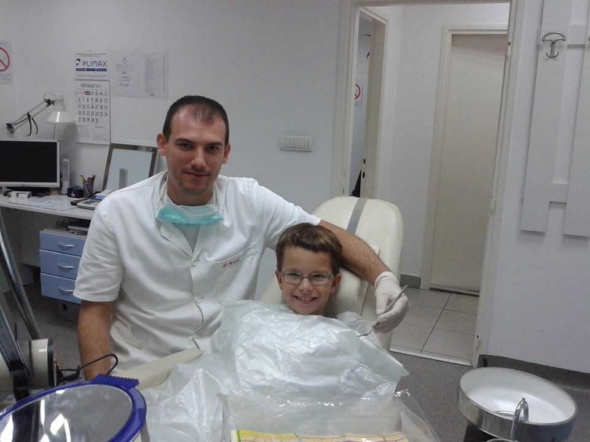
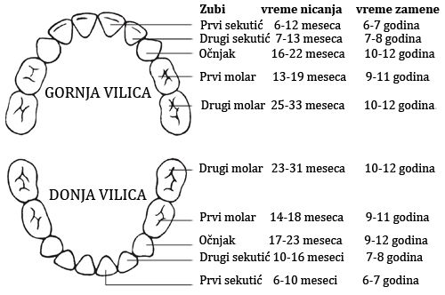
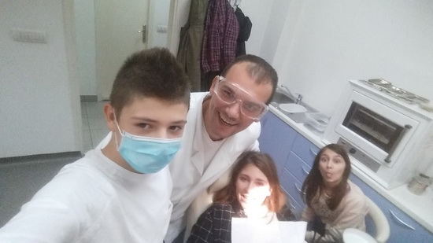
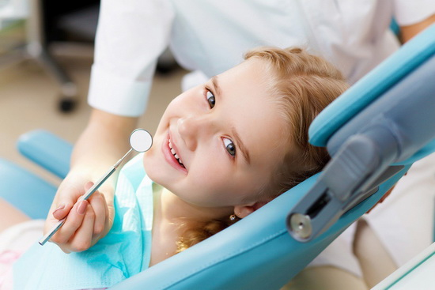

Child dentistry is an integral part of the entire dentistry that deals with the study of physiological and pathological events in the child's mouth.

In the first place, child dentistry has the task of preventing and treating diseases of the oral cavity and teeth, gaining trust and the desire of children to accept preventive and therapeutic interventions and, ultimately, giving advice that should motivate children and parents to visit dentists regularly.

In the dental office of MilicDental, great attention is paid to working with children. Gaining trust in a dentist from the earliest age is a great achievement for every doctor and remains a lasting benefit for the small, and tomorrow a great patient. Through play, warm and direct communication with children, an experienced dentist acquires the trust of the child and this is the best way to the success of any dental intervention, or even better, prevention. Dr. Milic pays great attention to working with children and children's dentistry. Invested love and patience in working with small patients always get the right reward - trust and loyalty of the child.

Fisure
During the period when they do not have permanent teeth, it is necessary to pour the tooth fissures in order to prevent the development of caries. In the period between 6 and 7 years, the first permanent tooth (knuckle) sestica. Watering fissures is a procedure for the prevention of caries on the side teeth and can not be performed on teeth already affected by caries.
The most common are waterfowl, and sometimes the preuter. Before watering the fissures, it is necessary for the dentist to perform a dental examination to determine that the teeth to be healed are completely healthy. The teeth have a large number of small recesses and grooves, which make up the so-called fissure system. Some of these recesses are of such dimensions that simple toothbrush fibers can not reach them. As a consequence, there is a much greater risk of developing caries in these places, as bacteria develop unimpededly. Watering fissures is a process that prevents this problem from occurring. Some estimates suggest that by filling the fissure, the risk of caries is reduced by half.
FISURAL PROCEDURE

The procedure of watering the fissures is absolutely painless and does not require the removal of hard dental tissues. No anesthesia is required for watering. First, the teeth are thoroughly cleaned to remove deposits and food residues. Acid is then applied on the bite surface, which allows better retention of the toothpaste. On the treated surface of the tooth, a liquid watering agent is applied which, due to its physical properties, easily fills the fissures, pits and grooves. With light polymerization lasting for several seconds, the feeder passes from the liquid to the solid state, which also fixes for the surface of the teeth. After fusion of fissures, food and drink can be consumed immediately. In a very short period of time, chewing will fill the falconer and there will no longer be any difference in relation to the previous state, when it comes to feeling. Fissures can last for more than five years, but should regularly come to a dental examination to monitor their condition.
WHEN FISURES WILL BE APPLIED?
Watering fissures is only used in permanent dentition, i.e. when they have permanent teeth. This preventive measure prevents accumulation of dental plaque in deep pits on the bite of the teeth. The watering procedure has been applied since the beginning of the 20th century, and since decade in decade, materials have been changed which have been used as a farmer.